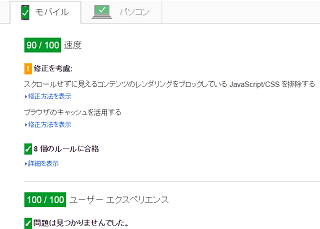

スマホ用サイトを最適化
スマホ用サイトをレスポンシブウェブデザインで作成したあとは、グーグルデベロッパーズの「PageSpeed Insights」で簡単にチェックしてみることをお勧めします。
これはページの表示スピードをチェックしてくれるツールですが、他にもレイアウト幅が適切にとられているかどうかとか、タップする際のリンクの大きさが適切かどうかなど、スマホ用サイト作成に役立つ情報を提供してくれます。
http://developers.google.com/speed/pagespeed/insights/
例えば、当ブログをチェックしてみますと、速度が90点、ユーザーエクスペリエンスが100点という結果になりました。

当ブログのようなテキストのみのサイトの場合は特に修正する点もあまりありませんが、大規模サイトの場合、画像の容量が大きすぎたりするとスマホで閲覧するには遅延が生じてしまいます。あるいは、広告サイズなどの関係で、サイトの表示幅が広くなりすぎることがあるかもしれません。
いつももっさり感があるサイトの場合は、修正することで劇的にサイトのパフォーマンスが向上する可能性もあるかと思います。
特にチェックしたいのは以下の要素です。
- 画像のロスレス圧縮
- viewport の適切な設定
- サーバーのHTTP圧縮配信
- 判読可能なフォントサイズの仕様
- ブラウザキャッシュの活用
画像のファイル容量をロスレス圧縮をすれば、画像の質はそのままで、小さなスマホで閲覧する際にも快適に表示されます。JPEGやPNGなどの画像を圧縮してくれるソフトやウェブ上で圧縮変換してくれるサイトなどが多数ありますので、ネット上で検索してみることをおすすめします。
また、htaccessでサーバー側のHTTP圧縮配信の設定をしたり、ブラウザのキャッシュ保持時間を長めに設定したりすると表示スピードも速くなるはずです。
これらを修正することで、パソコンで閲覧した際にも快適に表示されるようになるので、総合的なページビューアップも期待できることでしょう。
ただ、修正点で以下のようなものがあったのですが、
「スクロールせずに見えるコンテンツのレンダリングをブロックしている JavaScript/CSS を排除する」
これは外部CSSをインライン化したり、ファーストビュー以外のスタイルシートを最後の方に持っていくという対応方法になるようです。
確かに、htmlが正しく書かれているからといってページビューが増えるわけでもないので、htmlのvalidを犠牲にしても、サイトの表示速度を向上させ、ユーザビリティーを上げた方が実利のある気もしますが、外部CSSはやはりheadタグ内に書いておきたいものです。
このあたりまで完璧に修正しなくてもよいものと思われますので、100点満点とるまで修正するという形にはしなくてもよいかと思います。